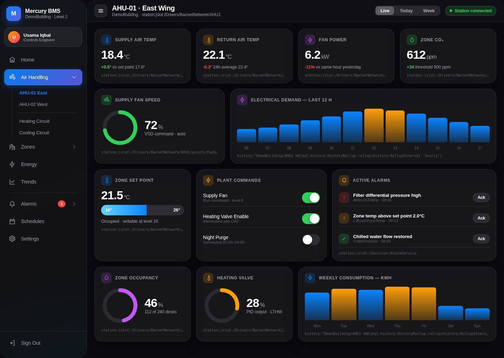
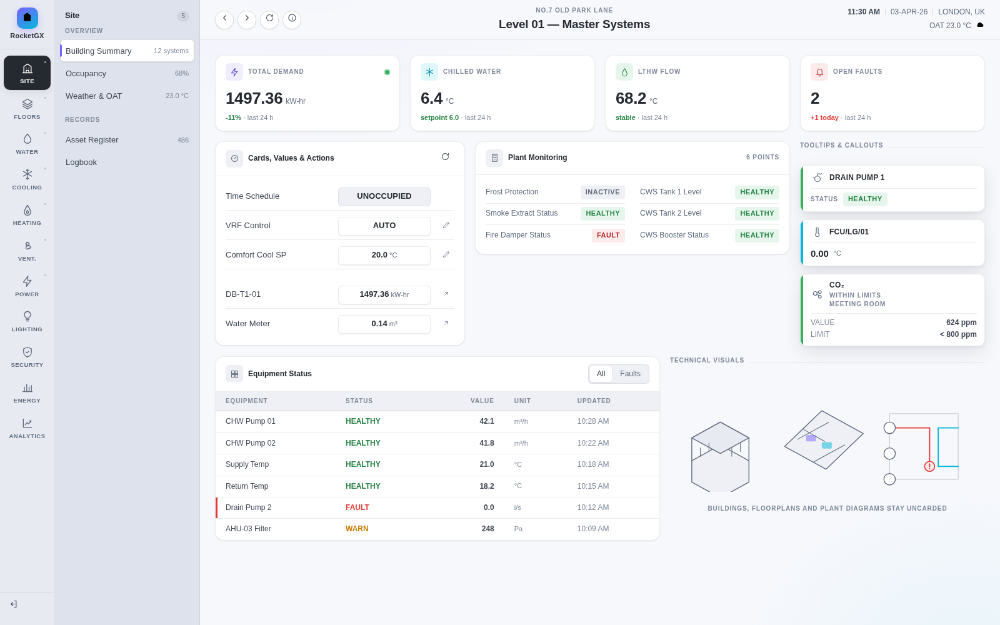
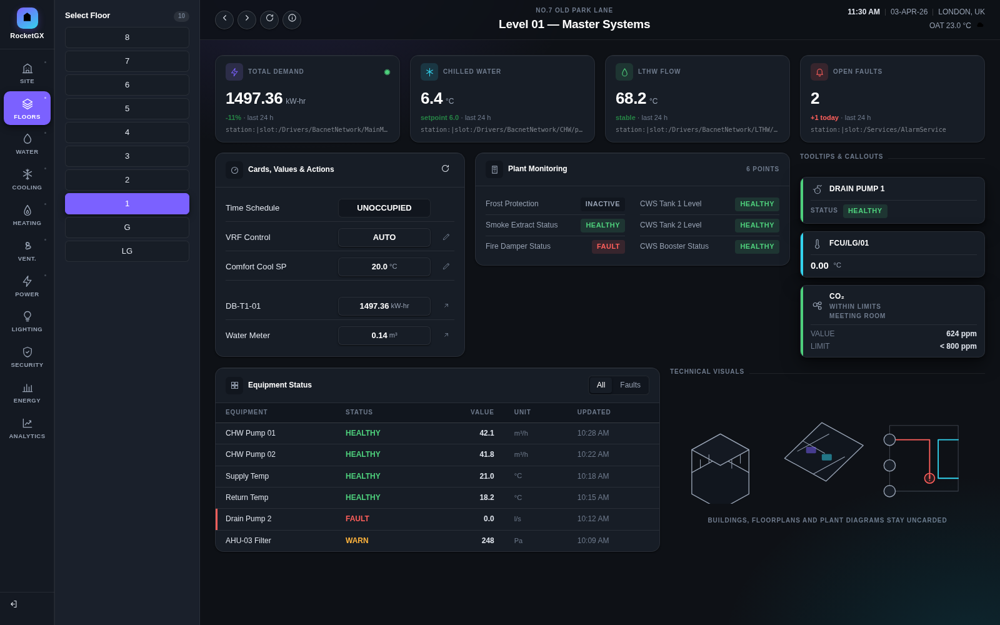
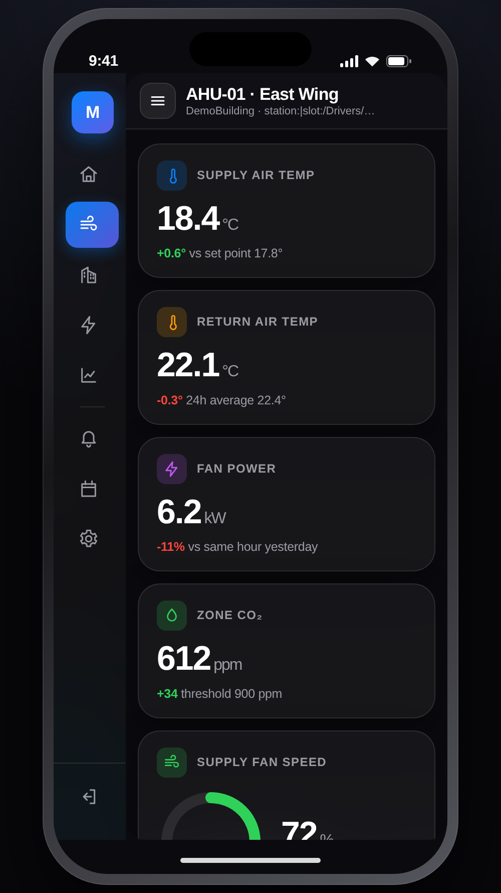
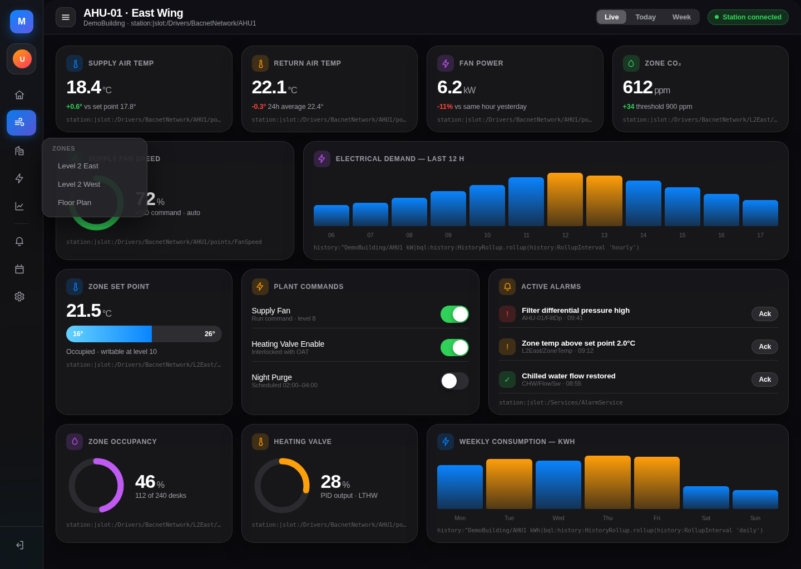

Niagara Framework development
bajaux widgets, PX graphics, drivers and Workbench tooling for Niagara 4 — and Java 21 porting for Niagara 5. Pure Java and JS, so it runs on JACE hardware as readily as on a Supervisor. Fixed price per deliverable.
Two widget sets, running in a Niagara station. Screens are from a demonstration station, not a client site.

station:|slot:/Drivers/BacnetNetwork/AHU1/points/…) and the charts are
driven by BQL history rollups — not static artwork.




Fixed price per deliverable, quoted against a written spec.
Dashboards, navigation and equipment views themed to your brand and bound to your points. Responsive, so one set covers desktop, tablet and phone.
Bespoke rt, wb and ux modules against the
Baja API — services, drivers and integrations to systems that have no stock
Niagara support.
Bulk point renaming, station audits, provisioning and migration helpers — the repetitive engineering that eats project hours.
Java 8 → 21 refactor, re-signing, dependency audit and a regression pass on an existing module, plus a readiness statement you can publish.
Because integrators have started asking, and silence reads badly.
| Item | Position |
|---|---|
| Java 21 | New work is written to compile clean under Java 21. Nothing depends on
SecurityManager, which N5 removes. |
| Signing | Modules are signed. N5 makes a valid signature mandatory with no grace period, so unsigned and abandoned modules will simply not load. |
| Native code | None. Pure Java plus JS/CSS resources, so a module runs on QNX/ARM JACE hardware and on x86 Supervisors without a separate build. |
| Version stamping | Modules are stamped to the oldest Niagara version they must support, so one build installs across a mixed estate rather than forcing an upgrade. |
| N4 today | Current work targets 4.14 and 4.15 and keeps running there. N4 reaches end of life in 2028; there is no need to move everything at once. |
On the JACE 9000 migration. Niagara 5 does not run on JACE-8000 hardware at all, so migration is a controller swap at every node rather than a software update — and every third-party module on those stations has to be recompiled and re-signed before it will load. If you are scoping that work across an estate, an audit of which modules actually survive the move is a sensible first step, and a short one.
Scope, target Niagara version and target hardware agreed in writing before a price. No hourly billing.
Built against your actual point naming and tagging, so it does not need rework on handover.
A stated commitment against Niagara point releases. A module that quietly breaks on a security update is not finished work.
Bespoke work can be delivered with source, so you are not dependent on us to keep it alive.